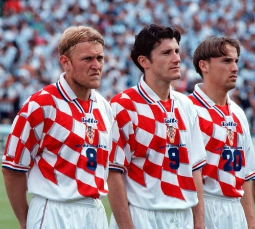

Hoy 12 de enero recordamos el nacimiento de Robert Prosinečki, el elegante mediocampista croata que deslumbró en Europa y marcó historia.
Nacimiento y primeros pasos
Robert Prosinečki nació el 12 de enero de 1969 en Villingen-Schwenningen, Alemania, hijo de padres inmigrantes croatas, y regresó con su familia a Yugoslavia para formarse en las categorías inferiores del Dinamo Zagreb.

Prosinečki representó una generación dorada para el fútbol croata.El "joven prodigio" yugoslavo
Con apenas 18 años, hizo su debut en el Dinamo Zagreb y rápidamente fue fichado por el Estrella Roja de Belgrado en 1987. Allí, se convirtió en pieza clave y brilló especialmente en la histórica conquista de la Copa de Europa 1991.
Trayectoria en los grandes de España
Prosinečki se unió luego al Real Madrid (1991‑1995), donde ganó una Copa del Rey y una Supercopa de España. También vistió las camisetas de Oviedo, Barcelona y Sevilla, mostrando una técnica y visión excepcionales.